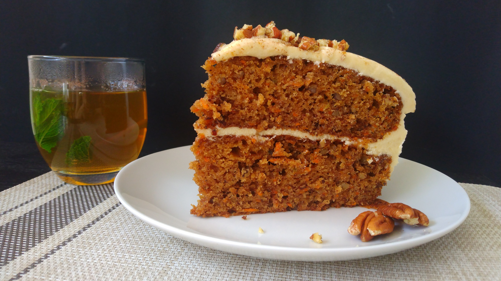

Carrot Cake
- Preparación: 20 min
- Cocción: 30 - 35 min
- Porciones: 1 pastel de dos pisos (22 cm)
INGREDIENTES
BIZCOCHO
- 2 ½ tazas (300 g) de harina de trigo de todo uso
- 2 cucharaditas de polvo para hornear
- 1 cucharadita de bicarbonato de sodio
- 1 cucharadita de sal
- 1 cucharadita de canela en polvo
- ½ cucharadita de nuez moscada en polvo
- 1 taza (225 g) de aceite vegetal
- ¾ taza (150 g) de azúcar morena
- ¾ taza (150 g) de azúcar granulada
- 4 huevos
- 2 cucharaditas de esencia pura de vainilla
- 3 tazas (320 g) de zanahoria rallada
- 1 taza (120 g) de nueces picadas
GLASEADO
- 1 taza (220g) de mantequilla a temperatura ambiente
- 4 tazas (480 g) de azúcar glass
- ¼ taza (60 g) de leche
- 2 cucharaditas de esencia pura de vainilla
- sal al gusto, opcional (omitir si la mantequilla lleva sal)
DECORACIÓN
- nueces picadas o canela en polvo
DESCRIPCIÓN
Un pastel deliciosamente cargado de sabores, gran clásico de la cocina estadounidense. EL bizcocho es muy fácil y rápido de hacer, y se puede acompañar con un glaseado clásico de mantequilla. El resultado es elegante e infalible.
INSTRUCCIONES
- Precalentar el horno a 180 °C (350 °F). Engrasar dos moldes para pastel de aproximadamente 22 cm de diámetro. Cubrir el fondo de los dos moldes con papel para hornear.
- En un recipiente grande, mezclar la harina, polvo para hornear, bicarbonato, sal, canela y nuez moscada. Reservar.
- En un recipiente mediano batir el aceite, azúcar morena y granulada, huevos y esencia de vainilla hasta obtener una mezcla homogénea. Verter esta mezcla en los ingredientes secos del paso 2 hasta que todo se mezcle bien, pero ya sin batir.
- Agregar las zanahorias ralladas y las nueces picadas y mezclar suavemente con una cuchara. Distrubuir la masa en los dos recipientes para hornear con la ayuda de una espátula para uniformizar la superficie.
- Hornear los bizcochos por 30 - 35 minutos o hasta que al insertar un palillo en el centro salga limpio. Dejar enfriar completamente los bizcochos antes de desmoldarlos. Al desmoldar, quitar con cuidado el papel para hornear.
BIZCOCHO
- Batir la mantequilla a velocidad media 2-3 minutos hasta obtener una consistencia cremosa.
- Agregar el azúcar glass, leche y vainilla y seguir batiendo hasta obtener una mezcla uniforme y suave.
- Si la consistencia es muy fluida, agregar un poco mas azúcar. Si es demasiado firme, agregar un poco mas de leche. Ajustar el sabor si es necesario con una pizca de sal. Recomiendo refrigerar durante 20-30 min antes de ensamblar el pastel. También puede prepararse dos o tres dias antes y conservar en un recipiente cerrado herméticamente en refrigeración. En este caso, sacar a temperatura ambiente una media hora antes de ensamblar el pastel.
GLASEADO
- Lo más importante para ensamblar es que los bizcochos esten fríos (o a temperatura ambiente) y que el glaseado no este ni muy firme ni muy fluido. Colocar uno de los bbizcochos en una base o plato plano y untar el glaseado con una espátula en una capa de aproximadamente 8 - 10 mm de alto. Luego, colocar encima el siguiente bizcocho y cubrir toda la superficie y laterales con el glaseado restante.
- Una vez que hayamos agotado el glaseado, meter todo el pastel en refrigeración por lo menos media hora antes de servir. Opcionalmente se puede decorar con nueces picadas, canela en polvo, o con una manga pastelera.